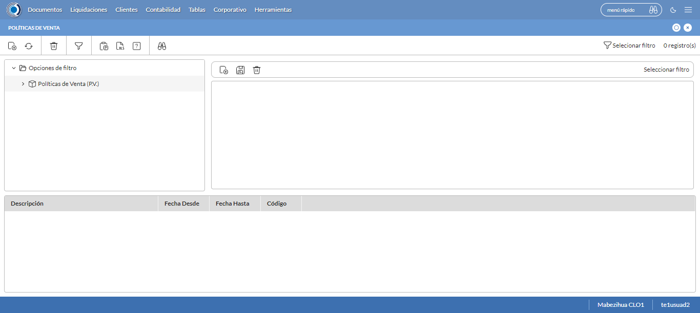
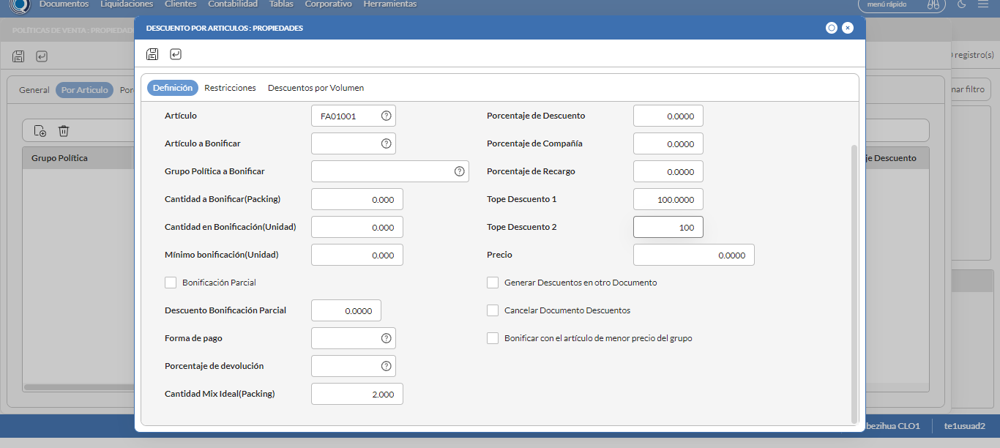
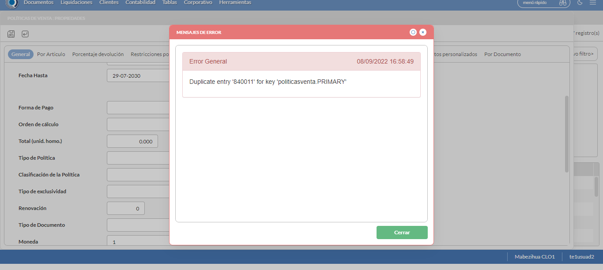

Desarrollado por : Area de Testing PWST
Fecha y hora de inicio : 2022-09-08 11:54:43
Duracion : 0:08:02.730969
Resultado : Total 8，Correctos 8 ，Taza de resultado 100.00%
Resumen 100.00% Errores 0 Fallidos 0 Correctos 8 Test realizados 8
| Caso de Prueba | Total | Correctos | Fallido | Error | Detalles | Captura del error |
| PoliticasVenta7.Test: Escenario 1 de Politica Mix Ideal | 8 | 8 | 0 | 0 | Detalles | |
test |
pt1_1: 2022-09-08 11:54:45,764 - root - INFO - Se abre el chrome
2022-09-08 11:54:46,968 - root - INFO - Entra a la URL
2022-09-08 11:54:47,095 - root - INFO - Maximiza la pantalla
2022-09-08 11:54:50,159 - root - INFO - Cambia al frame
|
|
||||
test_000: Ingresa a la base de datos |
pt1_2: 2022-09-08 11:54:53,343 - root - INFO - Escribe el usuario
2022-09-08 11:54:53,454 - root - INFO - Escribe la contraseña
2022-09-08 11:54:53,607 - root - INFO - Se dio clic en el boton ingresar
2022-09-08 11:54:54,948 - root - INFO - Ejecutar Enterprise
2022-09-08 11:54:54,949 - root - INFO - Captura: C:\xampp\htdocs\versiones\automatizaciones\AutoPWST\07PV\report\img screen：20220908_11_54_54.png
2022-09-08 11:54:59,213 - root - INFO - Cambia entre pestañas
|

|
||||
test_001: Abre menu y ejecuta pantalla |
pt1_3: 2022-09-08 11:55:04,317 - root - INFO - Abre el menu completo
2022-09-08 11:55:19,217 - root - INFO - Abre la pantalla de Politicas de Venta
2022-09-08 11:55:19,271 - root - INFO - La pantalla ejecutada es Politicas de Venta
2022-09-08 11:55:22,286 - root - INFO - Captura: C:\xampp\htdocs\versiones\automatizaciones\AutoPWST\07PV\report\img screen：20220908_11_55_22.png
2022-09-08 11:55:22,506 - root - INFO - Se presiona el boton 'Nuevo', para crear un nuevo registro.
|
 | ||||
test_002: Abre la ventana de nuevo y crear un registro |
pt1_4: 2022-09-08 11:55:27,573 - root - INFO - Se abrio la pantalla para el ingreso de un registro nuevo.
2022-09-08 11:55:27,615 - root - INFO - El campo 'Codigo' si se encuentra visible.
2022-09-08 11:55:27,654 - root - INFO - El campo 'Codigo Alternativo' si se encuentra visible.
2022-09-08 11:55:27,693 - root - INFO - El campo 'Descrición' si se encuentra visible.
2022-09-08 11:55:27,732 - root - INFO - El campo 'Fecha Desde' si se encuentra visible.
2022-09-08 11:55:27,771 - root - INFO - El campo 'Fecha Hasta' si se encuentra visible.
2022-09-08 11:55:27,810 - root - INFO - El campo 'Moneda' si se encuentra visible.
2022-09-08 11:55:27,856 - root - INFO - El campo 'Aplicable en' si se encuentra visible.
2022-09-08 11:55:27,901 - root - INFO - El campo 'Activa' si se encuentra visible.
2022-09-08 11:55:27,941 - root - INFO - El campo 'Aplicación Global' si se encuentra visible.
2022-09-08 11:55:28,009 - root - INFO - Ingresa el codigo del nuevo registro
2022-09-08 11:55:31,132 - root - INFO - Ingresa el codigo alternativo del nuevo registro
2022-09-08 11:55:34,313 - root - INFO - Ingresa la descripción del nuevo registro
2022-09-08 11:55:42,830 - root - INFO - Se dió click en el botón Hoy para seleccionar la fecha Actual.
2022-09-08 11:55:45,994 - root - INFO - Ingresa la Fecha hasta del nuevo registro
2022-09-08 11:55:56,463 - root - INFO - Se dió doble click en el registro de Moneda.
2022-09-08 11:56:06,866 - root - INFO - Se dió click en la opción BackOffice y Mobile.
2022-09-08 11:56:09,952 - root - INFO - Se dió click en el checkbox Activa.
2022-09-08 11:56:13,042 - root - INFO - Se dió click en el checkbox Aplicación Global.
2022-09-08 11:56:16,133 - root - INFO - Se hace el cambio a la pestaña Por Articulo para continuar con el registro nuevo
2022-09-08 11:56:19,209 - root - INFO - Se presiona el boton 'Nuevo', para crear un nuevo registro de Por Articulo.
2022-09-08 11:56:24,274 - root - INFO - El campo 'Artículo' si se encuentra visible.
2022-09-08 11:56:24,315 - root - INFO - El campo 'Cantidad Mix Ideal(Packing)' si se encuentra visible.
2022-09-08 11:56:24,353 - root - INFO - El campo 'Tope Descuento 1' si se encuentra visible.
2022-09-08 11:56:24,392 - root - INFO - El campo 'Tope Descuento 2' si se encuentra visible.
2022-09-08 11:56:24,514 - root - INFO - Ingresa el Articulo del nuevo registro
2022-09-08 11:56:31,652 - root - INFO - Ingresa la Cantidad de Mix Ideal del nuevo registro
2022-09-08 11:56:34,758 - root - INFO - Ingresa el Tope Descuento 1 del nuevo registro
2022-09-08 11:56:37,892 - root - INFO - Ingresa el Tope Descuento 2 del nuevo registro
2022-09-08 11:56:40,903 - root - INFO - Captura: C:\xampp\htdocs\versiones\automatizaciones\AutoPWST\07PV\report\img screen：20220908_11_56_40.png
2022-09-08 11:56:41,133 - root - INFO - Se presiona el boton 'Guardar', para guardar el registro de Por Articulo.
2022-09-08 11:56:46,223 - root - INFO - Se presiona el boton 'Nuevo', para crear otro nuevo registro de Por Articulo.
2022-09-08 11:56:51,375 - root - INFO - Ingresa el Articulo del nuevo registro
2022-09-08 11:57:01,582 - root - INFO - Ingresa la Cantidad de Mix Ideal del nuevo registro
2022-09-08 11:57:04,688 - root - INFO - Ingresa el Tope Descuento 1 del nuevo registro
2022-09-08 11:57:07,801 - root - INFO - Ingresa el Tope Descuento 2 del nuevo registro
2022-09-08 11:57:10,885 - root - INFO - Se presiona el boton 'Guardar', para guardar el seguhdo registro de Por articulo.
2022-09-08 11:57:16,016 - root - INFO - Se presiona el boton 'Nuevo', para crear otro nuevo registro de Por Articulo.
2022-09-08 11:57:21,144 - root - INFO - Ingresa el Articulo del nuevo registro
2022-09-08 11:57:31,276 - root - INFO - Ingresa la Cantidad de Mix Ideal del nuevo registro
2022-09-08 11:57:34,436 - root - INFO - Ingresa el Tope Descuento 1 del nuevo registro
2022-09-08 11:57:37,552 - root - INFO - Ingresa el Tope Descuento 2 del nuevo registro
2022-09-08 11:57:40,683 - root - INFO - Se presiona el boton 'Guardar', para guardar el tercer registro de Por Articulo.
2022-09-08 11:57:45,778 - root - INFO - Se da clic en el boton Guardar; se debe crear un nuevo registro.
|
 | ||||
test_003: Repetir el registro creado anteriormente |
pt1_5: 2022-09-08 11:57:50,877 - root - INFO - Se presiona el boton 'Refrescar', para crear un nuevo registro igual al anterior.
2022-09-08 11:57:55,987 - root - INFO - Se presiona el boton 'Nuevo', para crear un nuevo registro igual al anterior.
2022-09-08 11:58:01,064 - root - INFO - Se abrio la pantalla para el ingreso de un registro nuevo.
2022-09-08 11:58:01,135 - root - INFO - Ingresa el codigo del nuevo registro
2022-09-08 11:58:04,263 - root - INFO - Ingresa el codigo alternativo del nuevo registro
2022-09-08 11:58:07,453 - root - INFO - Ingresa la descripción del nuevo registro
2022-09-08 11:58:15,937 - root - INFO - Se dió click en el botón Hoy para seleccionar la fecha Actual.
2022-09-08 11:58:19,115 - root - INFO - Ingresa la Fecha hasta del nuevo registro
2022-09-08 11:58:29,601 - root - INFO - Se dió doble click en el registro de Moneda.
2022-09-08 11:58:39,980 - root - INFO - Se dió click en la opción BackOffice y Mobile.
2022-09-08 11:58:43,065 - root - INFO - Se dió click en el checkbox Activa.
2022-09-08 11:58:46,184 - root - INFO - Se dió click en el checkbox Aplicación Global.
2022-09-08 11:58:49,308 - root - INFO - Se da clic en el boton Guardar; NO se debe crear un nuevo registro.
2022-09-08 11:58:54,317 - root - INFO - Captura: C:\xampp\htdocs\versiones\automatizaciones\AutoPWST\07PV\report\img screen：20220908_11_58_54.png
2022-09-08 11:58:54,524 - root - INFO - Se presiona el boton 'Cerrar', para cerrar el mensaje de duplicidad de llave primaria
2022-09-08 11:58:57,615 - root - INFO - Se presiona el boton 'Cerrar', para cerrar la ventana
|
 | ||||
test_004: Modificar el registro |
pt1_6: 2022-09-08 11:59:01,718 - root - INFO - Se presiona el boton 'Refrescar', para proceder a modificar el registro.
2022-09-08 11:59:11,342 - root - INFO - Se da clic en el registro creado, para proceder a modificarlo.
2022-09-08 11:59:16,487 - root - INFO - Se modifica el contenido del campo Codigo Alternativo
2022-09-08 11:59:19,753 - root - INFO - Se modifica el contenido del campo Descripcion
2022-09-08 11:59:28,238 - root - INFO - Se dió click en el botón Hoy para seleccionar la fecha Actual.
2022-09-08 11:59:31,446 - root - INFO - Se modifica el contenido del campo Fecha Hasta
2022-09-08 11:59:34,556 - root - INFO - Se dió click en el checkbox Aplicación Global.
2022-09-08 11:59:37,655 - root - INFO - Se hace el cambio a la pestaña Por Articulo para continuar con la modificación del registro
2022-09-08 11:59:52,287 - root - INFO - Se da clic en el primer registro de Por Articulo , para proceder a modificarlo.
2022-09-08 11:59:57,461 - root - INFO - Se modifica el contenido del campo Cantidad Mix Ideal
2022-09-08 12:00:00,549 - root - INFO - Se presiona el boton 'Guardar', para guardar la modificación del primer registro de Por Articulo.
2022-09-08 12:00:10,148 - root - INFO - Se da clic en el segundo registro de Por Articulo , para proceder a modificarlo.
2022-09-08 12:00:15,288 - root - INFO - Se modifica el contenido del campo Cantidad de Mix Ideal
2022-09-08 12:00:18,387 - root - INFO - Se presiona el boton 'Guardar', para guardar la modificación del segundo registro de Por Articulo.
2022-09-08 12:00:28,004 - root - INFO - Se da clic en el tercer registro Por Articulo, para proceder a modificarlo.
2022-09-08 12:00:33,170 - root - INFO - Se modifica el contenido del campo Cantidad Mix Ideal
2022-09-08 12:00:36,272 - root - INFO - Se presiona el boton 'Guardar', para guardar la modificación del tercer registro de Por Articulo.
2022-09-08 12:00:41,360 - root - INFO - Se da clic en el boton Guardar; se debe modificar la informacion del registro.
|
|
||||
test_005: Eliminar el registro creado |
pt1_7: 2022-09-08 12:00:51,452 - root - INFO - Se presiona el boton 'Refrescar', para proceder a eliminar el registro.
2022-09-08 12:01:01,090 - root - INFO - Se da clic en el registro creado, para proceder a eliminarlo.
2022-09-08 12:01:06,186 - root - INFO - Se hace el cambio a la pestaña Por Articulo para continuar con la eliminación de Por Articulo
2022-09-08 12:01:22,778 - root - INFO - Se da clic en el primer registro de Por Articulo, para proceder a eliminarlo.
2022-09-08 12:01:32,878 - root - INFO - Se presiona el boton 'Eliminar', para eliminar el primer registro de Por Articulo.
2022-09-08 12:01:39,449 - root - INFO - Se da clic en el segundo registro de Por Articulo, para proceder a eliminarlo.
2022-09-08 12:01:49,556 - root - INFO - Se presiona el boton 'Eliminar', para eliminar el segundo registro de Por Articulo.
2022-09-08 12:01:56,139 - root - INFO - Se da clic en el tercer registro de por Articulo, para proceder a eliminarlo.
2022-09-08 12:02:06,218 - root - INFO - Se presiona el boton 'Eliminar', para eliminar el tercer registro de Por Articulo.
2022-09-08 12:02:06,309 - root - INFO - Se da clic en el boton Guardar; se debe modificar la informacion del registro.
2022-09-08 12:02:20,901 - root - INFO - Se da clic en el registro creado, para proceder a eliminarlo.
2022-09-08 12:02:29,008 - root - INFO - Se presiona el boton 'Eliminar', para eliminar el registro.
2022-09-08 12:02:29,009 - root - INFO - Captura: C:\xampp\htdocs\versiones\automatizaciones\AutoPWST\07PV\report\img screen：20220908_12_02_29.png
2022-09-08 12:02:29,194 - root - INFO - Se confirma el eliminado del registro
2022-09-08 12:02:34,301 - root - INFO - Se presiona el boton 'Refrescar', para verificar si el registro ha sido eliminado.
2022-09-08 12:02:39,388 - root - INFO - Se presiona el boton 'Cerrar', para cerrar la pantalla de Politicas de Venta.
|

|
||||
test_006: Cerrar_Navegador |
pt1_8: 2022-09-08 12:02:46,128 - root - INFO - Se cierra chrome
|
|
||||
| Caso de prueba | 8 | 8 | 0 | 0 | Taza de resultado：100.00% | |